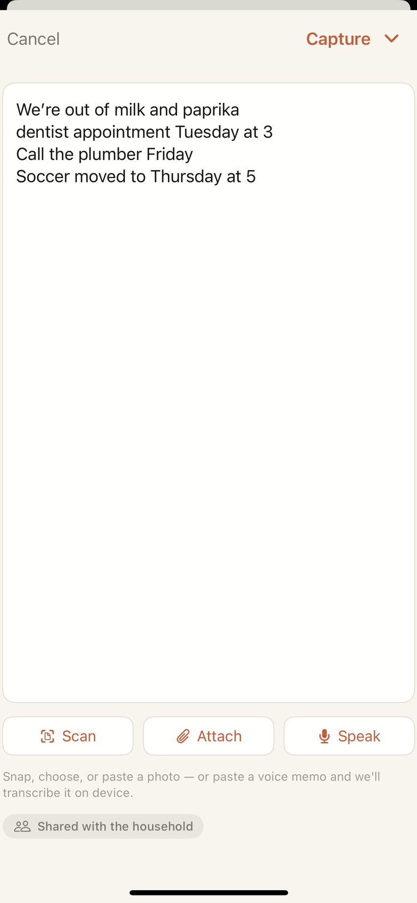
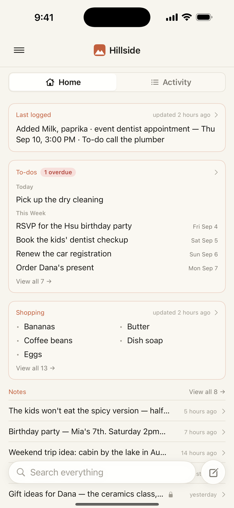
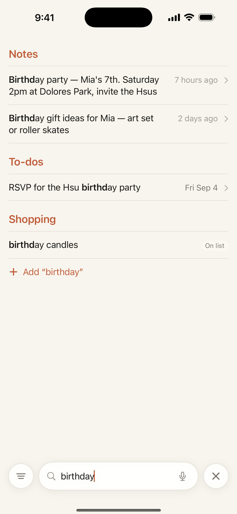
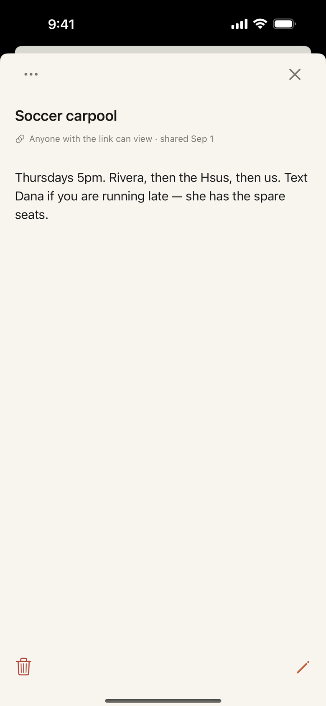
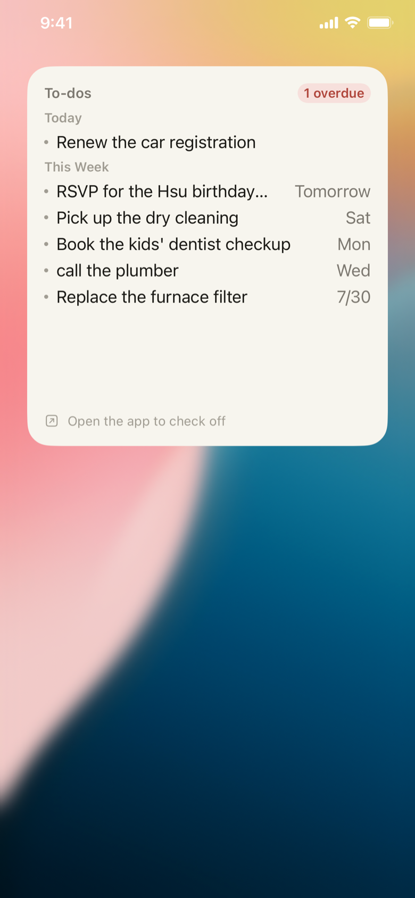

Get it out of your head. Hillside files it for you.
However it comes out — a full sentence, a fragment, a half-thought on your way out the door. The milk to grab on the way home, the library book due back, the thing the kids need Friday. Type it or say it, and each one lands where it belongs. No sorting.
Up and running in seconds. Already have an account? Log in.

You keep a lot in motion — the groceries, the plans, who needs what and when. Right now it lives across your head, a few texts, and a couple of apps. Even a perfect to-do app still leaves the filing to you; Hillside doesn't. It's the one shared place where you just say the thing, and it lands where it belongs — for the whole house.
Jumbled is fine
Groceries, a to-do, the dentist at 3, a photo of the receipt from the store, a voice memo from the walk home — jumbled together. Hillside reads the photo and transcribes the memo right on your phone, pulls each thread apart and sends it where it goes — no list to pick, no category. Guessed wrong? Open it and move it in a tap.
Email it in
Forward an email or BCC a receipt to your household's Hillside address and it lands in the same place everything else does — pulled apart and filed, no app to open. Attachments count too: forward a PDF bill and Hillside reads it, filing a to-do with the amount and the date it's due.
Just tell Siri
Hands full, halfway out the door? Say “Hey Siri, add to Hillside” — or “capture in Hillside” — then say the thing. It's caught and filed without unlocking your phone or opening the app.
Waiting where you'll look
Groceries on the shopping list. To-dos in one searchable place. Say “soccer Saturday at 9,” and one tap drops it on your calendar — no form, no fiddling with the date. Nothing to dig for.
Ask instead of dig
In the aisle wondering if you're out of paprika? Type it once and Hillside searches the whole house at a go — the shopping list, your notes, every to-do. It goes by what you mean, not the exact word, so “where to eat” turns up your “Restaurants to try.”
Right on your home screen
Add the To-dos widget to your iPhone home screen and what's due is there without opening a thing. It leads with the next seven days and flags anything overdue; tap a line to open it and check it off. Size it small or large, and set it to show dates, an overdue count, or only what's late.
A quiet nudge before tomorrow
Switch on the evening email and Hillside sends a short list of what's due tomorrow — plus anything still open. Off until you turn it on, one tap to stop.
One memory, the whole house
It lives in the household, not on one phone. Your partner adds something from the store and it's there before you've found your shoes. Everyone sees the same thing, and anyone can add or fix it — so the whole house is in it together. Need one just for you — a gift, a surprise, a doctor's appointment? Keep it to yourself in a tap; the rest stays shared.
Share just one thing out
The house shares everything by default — but now and then one note has to reach someone outside it. Hand the sitter the week's plan and the dinner notes, or a contractor the punch list: a read-only link to that single note, nothing else in the house. Change your mind and the link goes dead.
Ask it out loud
Connect it to Claude and just talk — “what can I make in 30 minutes with what's in the house?”, “remember the recycling goes out Thursday,” “we're out of butter” — and it reads and updates your home for you, hands-free.
A peek inside





